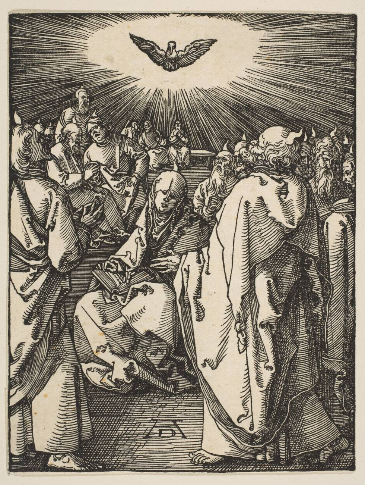

Atos 2:1-4: o batismo no Espírito Santo é uma segunda experiência, com línguas como sinal?
Os discípulos já criam em Jesus e foram cheios do Espírito no Pentecostes, falando em línguas. Para nós, essa promessa continua para cada crente que busca.

Os discípulos já criam em Jesus e foram cheios do Espírito no Pentecostes, falando em línguas. Para nós, essa promessa continua para cada crente que busca.

No dia de Pentecostes, os discípulos foram cheios do Espírito Santo e falaram em outras línguas. As Assembleias de Deus ensinam que esse batismo é distinto da salvação e tem as línguas como evidência inicial. Reformados como Augustus Nicodemus dizem que todo crente é batizado no Espírito na conversão, embora alguns admitam enchimentos posteriores. Mostramos os dois lados, e dizemos onde estamos.
E todos foram cheios do Espírito Santo, e começaram a falar noutras línguas, conforme o Espírito lhes concedia que falassem.Atos 2:4 · Almeida Corrigida Fiel (ACF), © Sociedade Bíblica Trinitariana do Brasil, citação curta
Pentecostes era a festa judaica das semanas, cinquenta dias depois da Páscoa, quando Jerusalém se enchia de judeus de muitas nações (Atos 2:5-11). Jesus tinha mandado os discípulos esperar ali a promessa do Pai: "vós sereis batizados com o Espírito Santo, não muito depois destes dias" (1:4-5), e "recebereis a virtude do Espírito Santo" para ser testemunhas (1:8).
Atos registra outros derramamentos: em Samaria, os que creram receberam o Espírito dias depois, pela imposição de mãos (8:14-17); em Cesareia, o Espírito caiu sobre Cornélio e os seus enquanto Pedro pregava, e eles falaram em línguas (10:44-46); em Éfeso, discípulos que conheciam só o batismo de João receberam o Espírito e falaram em línguas (19:1-6). Os dois lados leem esses relatos de maneiras diferentes, como mostram os teólogos acima.
Matthew Henry, comentarista inglês do século 18, escreveu que os discípulos foram cheios do Espírito "mais abundante e poderosamente do que antes", o que supõe que já tinham o Espírito. John Wesley notou que o milagre das línguas estava na boca de quem falava, não nos ouvidos de quem ouvia. Nenhum dos dois formulou a doutrina pentecostal moderna da evidência inicial, que nasceu no início do século 20.
Três sinais e um resultado. O vento e o fogo não voltam a aparecer em Atos; as línguas, sim, em Cesareia (10:46) e em Éfeso (19:6). A disputa é se esse padrão vale para hoje.
O batismo no Espírito Santo de Atos 2 é uma experiência distinta da conversão, com o falar em línguas como evidência inicial, ou todo crente já é batizado no Espírito quando nasce de novo?
Os discípulos já eram salvos antes do Pentecostes (Lucas 10:20; João 20:22) e foram batizados no Espírito depois. Em Samaria, Cesareia e Éfeso, o padrão se repete, e as línguas aparecem como sinal. Todo crente tem o Espírito; o batismo é revestimento de poder para servir, prometido a todos.
A Declaração de Fé afirma que o batismo no Espírito é distinto da salvação e do novo nascimento, e que pode ocorrer depois da regeneração ou junto com ela, como na casa de Cornélio. Diz que todos os crentes já têm o Espírito, e que as línguas são a evidência inicial, mas só a inicial: o fruto do Espírito e os dons são a evidência contínua.
O falar em línguas é a evidência inicial desse batismo, mas somente a evidência inicialDeclaração de Fé (CGADB/CPAD), capítulo XIX, "Sobre o batismo no Espírito Santo" (novembro de 2016)
Ciro Zibordi distingue dois batismos: na conversão, todo salvo é batizado pelo Espírito no corpo de Cristo (1 Coríntios 12:13); no batismo com o Espírito e com fogo, Cristo reveste de poder. O primeiro dá vida; o segundo, poder. Para ele, Atos não deixa dúvida de que as línguas são a evidência inicial, e ler Atos à luz das cartas de Paulo não enfraquece essa conclusão.
Nesse batismo da conversão, recebemos vida de Deus, mas o batismo com o Espírito e com fogo confere-nos poder de Deus"O que é o batismo com o Espírito Santo e com fogo? (2)" (Blog do Ciro) (13/04/2011)
Esequias Soares chama salvação e batismo no Espírito de duas bênçãos distintas. Todo crente tem o Espírito, mas os discípulos já tinham a vida eterna antes do Pentecostes. O batismo inicia o crente no serviço, não na salvação. Dos três sinais de Atos 2, só as línguas se repetem nos outros relatos (10:44-46; 19:6), por isso são a evidência física inicial.
Ser batizado no Espírito Santo inicia o crente no serviço, e não na salvação."O verdadeiro pentecostalismo", 1º trimestre de 2021, lição 3, "O batismo no Espírito Santo" (reproduzida no site Estudantes da Bíblia) (17/01/2021)
Douglas Baptista distingue o selo do Espírito, recebido na salvação (Efésios 1:13-14), do revestimento de poder no batismo. Em Atos, diz ele, as línguas aparecem explícitas em três relatos (capítulos 2, 10 e 19) e implícitas em dois (8:14-17; 9:17-18). E separa essas línguas, sinal do batismo, do dom de variedade de línguas, que pede interpretação.
o falar em outras línguas é sempre a evidência física inicial do batismo no Espírito Santo"A Santíssima Trindade", 1º trimestre de 2026, lição 10, "Espírito Santo, o Capacitador" (reproduzida no site Estudantes da Bíblia) (08/03/2026)
Paulo diz que todos os crentes foram batizados em um Espírito num só corpo (1 Coríntios 12:13), e pergunta se todos falam em línguas (12:30). Os intervalos de Atos pertencem a um período de transição, de Jerusalém aos gentios, e não são regra. Pode haver enchimentos posteriores, mas não uma segunda bênção que divida os salvos.
Augustus Nicodemus recusa ser chamado de cessacionista ou continuísta. Admite, com Lloyd-Jones, que há uma experiência de plenitude do Espírito distinta da conversão, que deve ser buscada, mas, com John Stott, não a chama de batismo. Reconhece que os apóstolos já eram regenerados no Pentecostes, mas lê os intervalos de Atos como transição. E não vê base para dizer que a plenitude sempre vem com línguas.
Fico com Lloyd-Jones que enfatiza a necessidade de buscarmos este enchimento como uma experiência distinta da conversão, mas fico com Stott em não chamá-la de batismo"O Dia de Pentecostes: em que pentecostais e reformados concordam e discordam" (blog O Tempora, O Mores) e artigo na Fides Reformata 1/1 (1996) (31/05/2020)
Solano Portela lê 1 Coríntios 12:13 como regra para todos: "todos nós" fomos batizados, no passado, num só corpo, em harmonia com "um só batismo" (Efésios 4:5) e com Romanos 8:9. Por isso o batismo no Espírito não seria segunda bênção. Ele teme que a doutrina divida os salvos em categorias, mas reconhece maturidade bíblica no pentecostalismo clássico, em contraste com o neopentecostal.
Não existe uma hierarquia dos salvos e, muito menos, salvos não batizados pelo Espírito Santo de Deus."Pentecostalismo, neopentecostalismo e o trabalho do Espírito Santo" (Monergismo; original na revista O Pensador Cristão, 2003) (09/01/2012 (publicação no Monergismo))
Guilhermino Cunha vê o Pentecostes como evento único na história da salvação e lê as línguas de Atos 2 como idiomas conhecidos. Para ele, todo nascido de novo é batizado com o Espírito, é templo do Espírito e tem o Espírito. A grande evidência disso não são dons espetaculares, mas o fruto do Espírito de Gálatas 5. E diz que não teme o que vem do Espírito dentro das Escrituras.
todo aquele que é nascido de novo é batizado com o Espírito Santo, é templo do Espírito Santo, e tem o Espírito Santo"O dom, os dons e o fruto do Espírito Santo" (Fides Reformata 1/2) (1996)
Este é o coração da fé pentecostal, e aqui a gente fala sem rodeio: o batismo no Espírito Santo é uma experiência distinta da salvação, prometida a todo crente, e o falar em línguas é a sua evidência inicial. A Declaração de Fé das Assembleias de Deus diz que essa experiência "ocorre após ou junto à regeneração" e que as línguas são "a evidência inicial desse batismo, mas somente a evidência inicial". E completa: "Essa é a nossa marca, como pentecostais que somos."
As razões estão no próprio Atos. Os discípulos que receberam o Espírito no Pentecostes já eram de Jesus: tinham os nomes escritos nos céus (Lucas 10:20). Em Samaria, os que creram receberam o Espírito depois (8:14-17). Em Éfeso, foi Paulo, o mesmo de 1 Coríntios 12, quem perguntou aos discípulos se tinham recebido o Espírito quando creram, e eles falaram em línguas (19:2-6). Para nós, Lucas não está contando exceções: está mostrando o padrão da igreja cheia do Espírito.
Respeitamos os irmãos reformados, e reconhecemos o que há de bom na leitura deles: todo crente tem o Espírito, e Augustus Nicodemus admite enchimentos depois da conversão que devem ser buscados. A diferença é que nós cremos que essa promessa tem nome, batismo, e tem sinal, línguas. Por isso a gente não para de orar e de ensinar: "pedi, e dar-se-vos-á" (Lucas 11:9-13).
Posição O Paladino · linha editorial pentecostal
Jesus mandou esperar em Jerusalém o batismo com o Espírito (1:4-5). Os que esperaram já eram seus discípulos.
O Espírito veio para revestir de poder e mandar a igreja até os confins da terra (1:8), não só para consolar.
"E todos foram cheios do Espírito Santo" (2:4): não só os apóstolos, mas os cerca de 120 reunidos (1:15).
Vento e fogo ficaram no Pentecostes; as línguas voltaram em Cesareia (10:46) e em Éfeso (19:6).
A promessa é para "todos os que estão longe, a tantos quantos Deus nosso Senhor chamar" (2:39): para hoje também.
Todo crente tem o Espírito, e a salvação é pela fé. O batismo no Espírito é revestimento de poder, não prova de salvação nem de superioridade.
A promessa é para os filhos e os que estão longe (2:39). A leitura de que os intervalos de Atos foram só transição existe e está relatada acima, mas, para nós, não dá conta de Samaria, Cesareia e Éfeso.
1 Coríntios 12:30 fala do dom, que precisa de interpretação. As línguas como sinal do batismo, ensina a Declaração de Fé, têm a mesma essência e outra função.
Presbiterianos, batistas e outros irmãos amam o Espírito Santo e confessam o mesmo evangelho. É divergência entre irmãos.
Se você já creu em Jesus, o Espírito Santo já habita em você. Mas a promessa de Atos 2:39 é para você também: busque o batismo no Espírito com fé e sem medo, em oração, na igreja e em casa. Não como prêmio para os melhores, mas como revestimento de poder para testemunhar (Atos 1:8).
E quem já foi batizado no Espírito não pare nas línguas. A Declaração de Fé lembra que elas são "somente a evidência inicial". O que prova a vida cheia do Espírito, dia após dia, é o fruto e os dons a serviço da igreja.
Dica: Antes de discutir 1 Coríntios 12:13, leia Atos 19:1-7 devagar: é Paulo quem pergunta "recebestes vós já o Espírito Santo quando crestes?".
Os dois lados leem Atos 2 com Joel 2:28-29, Lucas 3:16 e 24:49, Atos 1:4-8, 8:14-17, 9:17, 10:44-47, 11:15-17 e 19:1-7, 1 Coríntios 12:13 e 12:30, 14:18 e Efésios 5:18.
"Cheios do Espírito" (2:4) e "batizados com o Espírito" (1:5) descrevem a mesma experiência no Pentecostes, segundo os comentaristas pentecostais. "Outras línguas" traduz heterais glōssais, e os ouvintes reconheceram as suas próprias línguas (2:8). Em 1 Coríntios 12:13, a preposição en pode ser traduzida "por", "em" ou "com" um Espírito, e a escolha pesa no debate, como registra Augustus Nicodemus.
O Espírito habita em todo crente, mas Jesus prometeu mais: um revestimento de poder que caiu sobre discípulos que já criam e que continua disponível a quem pedir. As línguas marcam o começo dessa experiência, e o fruto mostra que ela continua.
Conhece alguém que vai gostar?
Mande este estudo para o seu grupo.
Fale com o editor
Wan Anderson Pelicioni de Castro, editor responsável. Sugestão de pauta, correção ou conversa: mande mensagem no Instagram.
Consulta às fontes em 31/10/2026.
Pesquisa nas fontes listadas e redação feitas com apoio de inteligência artificial. Citações literais conferidas no texto das páginas citadas. As Lições Bíblicas da CPAD foram lidas na reprodução do site Estudantes da Bíblia. Linha editorial pentecostal adotada pelo portal em 30/10/2026.